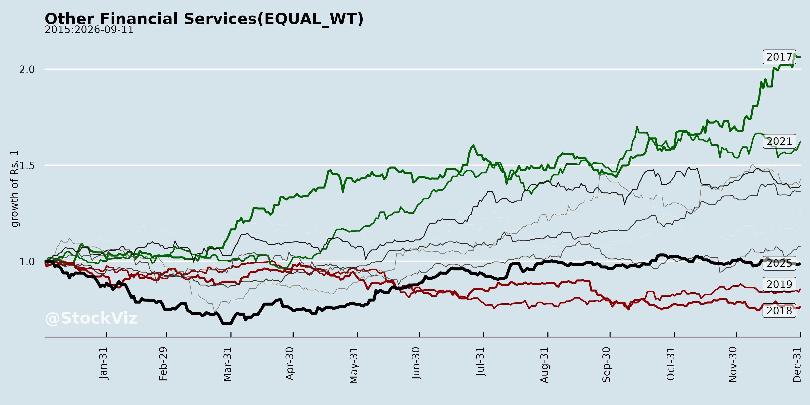
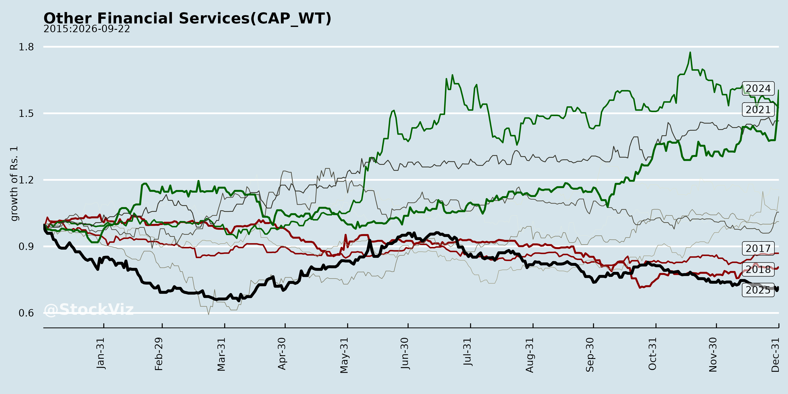
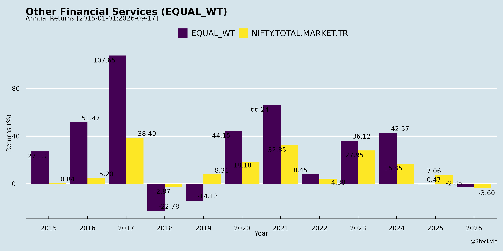
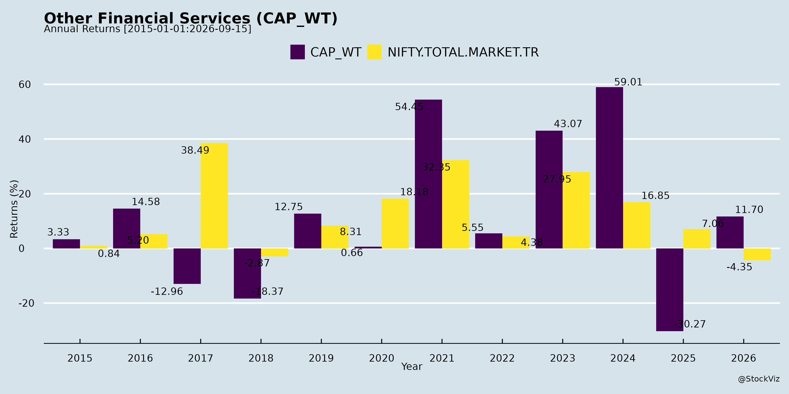
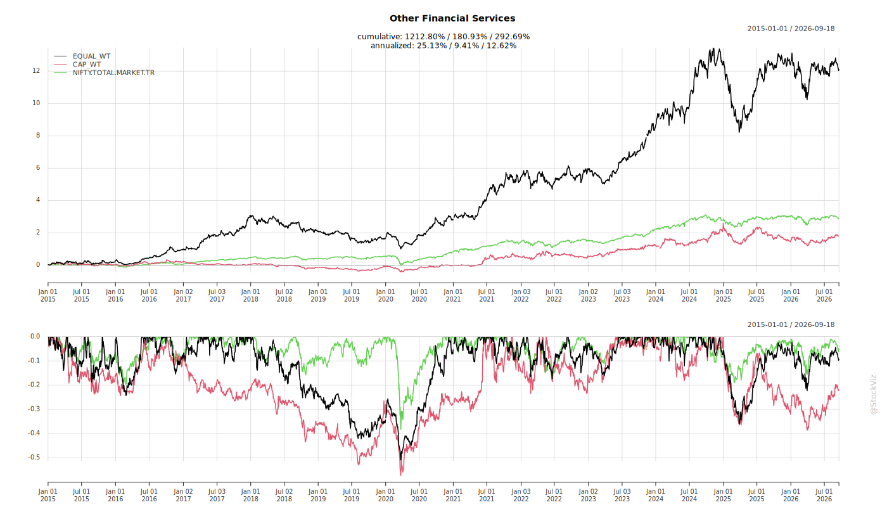
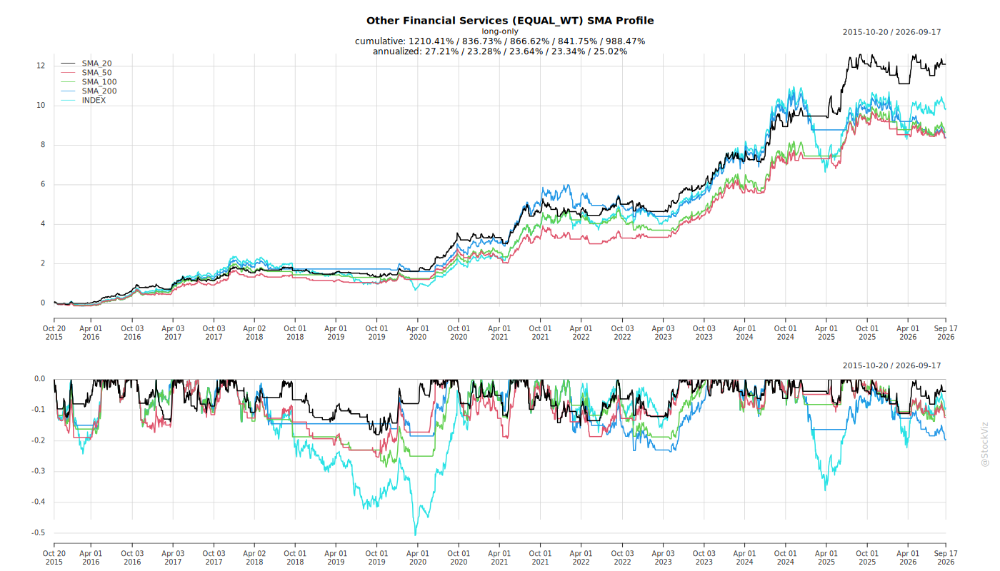
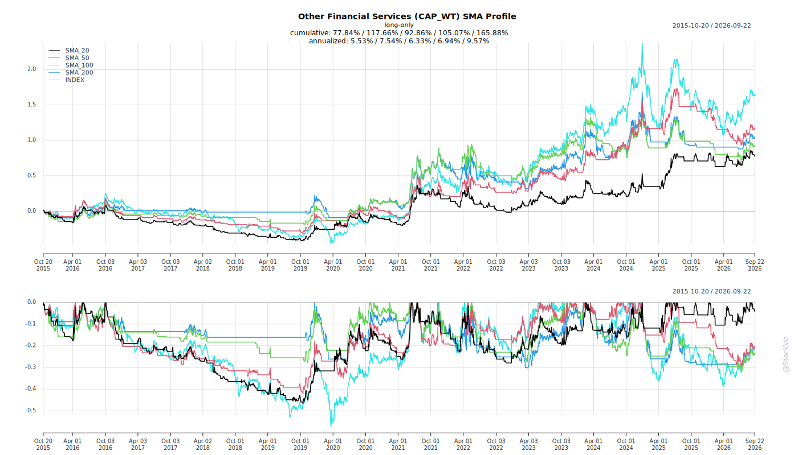
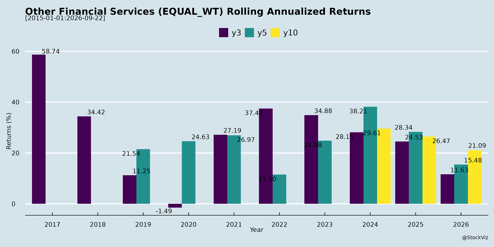
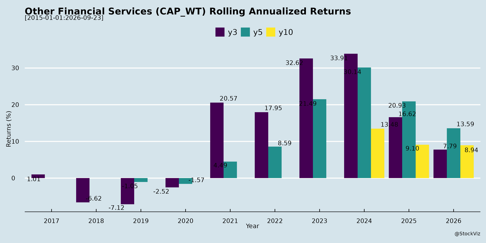

asof: 2025-11-27
Summary Analysis: Indian Other Financial Services Sector
(Based on Crisil Limited’s Q1 CY2025 Analyst Call Transcript – primary insights from ratings, analytics, research, and global financial services operations. Wealth First Portfolio Managers’ notice provides no substantive data, only procedural intimation of an analyst meeting.)
Tailwinds (Positive Drivers)
Headwinds (Challenges)
Growth Prospects
Key Risks
| Risk Category | Description | Mitigation |
|---|---|---|
| Macro/Geopolitical | Tariffs/trade wars, global slowdown delaying spends/capex (active watch; no material impact yet). | Diversified portfolio (domestic focus); client insights demand in uncertainty. |
| Discretionary Spending | Global banks/NBFCs curtailing transformation budgets. | Pivot to growth areas (private markets, Gen-AI, midsize banks). |
| Regulatory | SEBI feedback on end-use monitoring/track record (no final guidelines); RBI policy shifts. | Consultations via AIRA; methodology reviews. |
| FX & Operations | Revenue in foreign currencies; attrition stable but talent-dependent. | Hedging policy; proactive people management. |
| Competition/Industry | GCC scaling, pricing pressure in low-end loans; Gen-AI disruption risk. | Domain expertise, analytical rigor, Gen-AI augmentation (not replacement). |
| Liquidity/Credit | LDR at 81% (18-yr high); deposit-credit gap. | Benign rates/liquidity infusion expected to stabilize. |
Overall Sector View: Resilient amid uncertainty; domestic ratings/infra tailwinds offset global headwinds. Growth hinges on macro stabilization (e.g., tariff clarity, rate cuts). Crisil’s leadership positions it well, but sector peers face similar volatility in analytics/discretionary areas. No UPSI from Wealth First; monitor for portfolio mgmt. trends.
asof: 2025-11-27
Analysis of Indian Other Financial Services Sector
Context: The provided documents cover disclosures from listed entities in the “Other Financial Services” space (e.g., NBFCs, investment trusts, portfolio managers, securities firms, capital market intermediaries like Centrum Capital, Crisil, Delphi World Money, GACM Technologies, Gujarat Lease Financing, NDL Ventures, Prime Securities, Reliable Data Services, The Investment Trust of India, and Wealth First Portfolio Managers). These announcements (mostly Reg 30 SEBI LODR, dated 2025) highlight corporate actions, financial results, expansions, and compliances. Analysis focuses on sector-level headwinds (challenges), tailwinds (supports), growth prospects (opportunities), and key risks.
Tailwinds (Positive Factors)
Headwinds (Challenges)
Growth Prospects (Opportunities)
Key Risks
| Risk Category | Details | Mitigation/Impact |
|---|---|---|
| Regulatory | Pending approvals (NCLT for demergers, SEBI for AIF/ESOP/postal ballots); LODR non-compliances could trigger fines/delays. | High; monitor SEBI circulars (e.g., Nov 2024 master circular). |
| Governance | Auditor churn (Reliable Data); OCPS redemptions (Investment Trust: 10k shares due Dec 2025). | Medium; no material qualifications, but erodes trust. |
| Market/Financial | High finance costs (Investment Trust: ₹2,207 Cr H1, up 18%); equity volatility impacts broking/advisory (52% revenue mix). | High; leverage ratios ~3-4x in NBFCs. |
| Operational | Inter-segment dependencies (e.g., Delphi’s CCD conversions); forex/remittance exposure (Delphi). | Medium; geographic diversification (Ebix subsidiaries in Dubai/Singapore). |
| Execution | Rights issue uptake (GACM); AGM intimation delays (Gujarat Lease). | Low-Medium; demat credits via NSDL/CDSL mitigate. |
Summary
asof: 2025-11-27
Summary Analysis: Indian Other Financial Services Sector (Ratings, Analytics, Wealth Management)
Using the provided investor presentations from Crisil Limited (ratings, analytics, benchmarking) and Wealth First Portfolio Managers Limited (wealth advisory, PMS, distribution) as key inputs, the sector exhibits resilient growth amid macro headwinds. Both companies report steady core revenue expansion (Crisil: +9.4% 9M25 ops income; Wealth First: +13.3% H1 FY26 business activity income) driven by AUM/AUA growth and client stickiness, but face volatility in trading/markets. Below is a structured analysis.
Tailwinds (Supportive Factors)
Headwinds (Challenges)
Growth Prospects
Key Risks
Overall Outlook: Positive with Resilience. Core ops strong (trail-based stable), tailwinds from financialization/approvals outweigh near-term volatility. Growth hinges on equity inflows & execution; monitor macros. Sector poised for 15-20% CAGR medium-term, favoring diversified players like Crisil/Wealth First.
asof: 2025-11-27
Summary Analysis: Indian Other Financial Services Sector
Using the provided documents on Crisil Limited (ratings, analytics), Delphi World Money Ltd. (forex/remittances evolving to travel-fintech), and Prime Securities Limited (securities advisory/wealth management) as inputs, the sector exhibits robust domestic-driven momentum amid global headwinds. Key themes include digital transformation, inorganic growth, and diversification into high-growth adjacencies like AI analytics, travel-fintech, and wealth management. Below is a structured analysis of headwinds, tailwinds, growth prospects, and key risks.
Tailwinds (Positive Drivers)
Headwinds (Challenges)
Growth Prospects (Opportunities)
| Company | Key Growth Metric (Recent) | Projected Driver |
|---|---|---|
| Crisil | Q3 PAT +12.6% (₹193 Cr) | AI, acquisitions, analytics (12.7% seg growth) |
| Delphi | Rights Issue (₹100 Cr+) | Travel-fintech integration, digital platforms |
| Prime | FY25 PAT +106% (₹38 Cr) | Wealth mgmt, annuity revenues |
Key Risks (Threats)
Overall Sector Outlook: Positive (Buy/Hold Bias). Tailwinds from India’s growth and diversification outweigh headwinds, with 10-20% earnings growth feasible. Monitor global risks and execution. Crisil anchors stability (mature leader), Delphi offers high-beta growth (fintech pivot), Prime signals boutique upside (wealth mgmt). Cash-rich balance sheets (e.g., Prime ₹220 Cr) provide buffers.
Copyright © 2023 SAS Data Analytics Pvt. Ltd. All rights reserved.